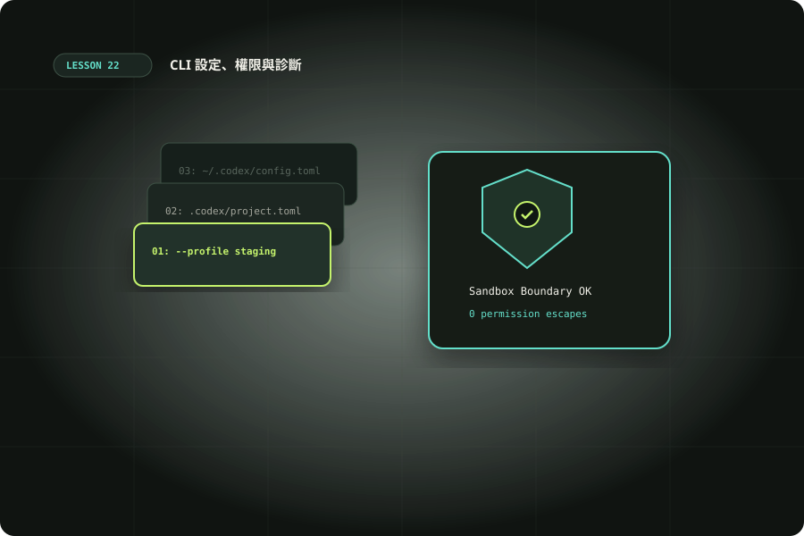

CLI 設定、權限與診斷
釐清設定優先序、信任、沙箱與命令規則，診斷環境差異。

準備與學習成果
開始前準備
- 完成09、14；Python3.11+讀取TOML；CLI可選
完成後你能
- 辨識設定來源與信任影響
- 區分沙箱、命令規則與強制requirements
- 以最小實驗診斷配置差異
兩小時實作安排
時間包含閱讀、操作、修正與驗收；不是純閱讀時間，也不是工具執行時間保證。
先分清意圖、配置與強制限制
第09課與客製化指南教你放置設定，本課練習解釋「為什麼沒有生效」。AGENTS.md 描述協作規則，config.toml 提供執行預設；requirements 與沙箱限制實際可做的事。寫一句允許聯網，不能讓受限環境突然有網路。診斷先記錄入口、版本、工作目錄、作業系統、登入模式與可重現命令；App、CLI、IDE可能有不同環境。不要一開始把所有權限放大。Config basics提供目前優先序與信任行為，升級前後要重新核對。以下檔案只在examples目錄，是教學素材；不覆寫你的使用者設定、不加入全域命令規則，也不假裝模擬器就是官方載入器。
codex --version
codex --help
codex login status
pwd
git status --short設定優先序：找出值從哪裡來
目前官方文件由高到低是CLI flags與--config、可信專案由repo root到CWD的配置（近處勝）、--profile選取的profile檔、使用者配置、雲端管理預設、系統配置與內建預設。每一層提供預設，強制requirements另外限制最終可用值。請先畫出你實際的CWD與各層檔案，不把另一個專案的設定混進來。選取profile也可能被更近的專案設定覆蓋。診斷某個鍵時記錄候選值、來源層與勝出的原因；巢狀表、陣列及特殊合併規則需要看官方reference，不能一律用最後dict.update解釋。新profile用 ~/.codex/名稱.config.toml 配合 --profile 名稱，不沿用過時的profiles表寫法。
離線 lab：信任與優先序
下載 config_lab.py 及 user.toml、profile.toml、project-root.toml、project-near.toml、requirements.demo.toml、invalid.toml，保持同一目錄。Python3.11+有tomllib。腳本只模擬平面鍵覆寫與一個教學requirements集合；省略系統/雲端預設及巢狀合併。先預測trusted/untrusted/CLI-read-only/CLI-too-broad四筆結果。trusted應取project-near，untrusted略過兩個project層取profile；CLI覆蓋來源但仍可能被demo requirement拒絕。invalid TOML應解析失敗。這些結果證明教材模擬邏輯，沒有更改或測試真正Codex的權限引擎。
python3 examples/22/config_lab.py信任不是永久全權限
官方文件指出不可信專案會略過project-scoped .codex配置、hooks與rules，使用者及系統層仍可載入。信任的目的是決定是否採用專案提供的設定；它不等於批准所有命令，也不替代沙箱。第一次讀陌生repo先檢查設定與腳本，了解內容後再決定信任。變體：在lab把近層web_search改為disabled，再看trusted/untrusted結果；回到真實環境則只在隔離練習repo操作並記錄差異。App能用但CI不能用，應比較帳號、CLI版本、工作目錄、信任與依賴，而不是立刻斷言模型不會用工具。把原因寫成可重現問題，能讓另一人不用猜就核對。
命令規則與沙箱要分別檢查
命令規則判斷某個命令應allow、prompt或forbidden，沙箱另外控制檔案與網路。allow規則不會創造網路、寫入protected目錄或越過管理限制。Rules說明prefix_rule與規則測試。下載 lab.rules，先閱讀內容，再用preview的execpolicy check只評估命令；這步不執行被檢查命令，不把樣本裝到全域。多規則命中按最嚴格decision看結果，不能只挑allow那條。寬泛python或shell前綴可能包含任意程式，應針對具體且可辨識的工作縮小範圍。若你的版本沒有execpolicy，記錄未支援，不把缺少檢查當作規則已通過。
codex execpolicy --help
codex execpolicy check --rules examples/22/lab.rules --pretty -- git status
codex execpolicy check --rules examples/22/lab.rules --pretty -- git push配置實驗不能取代執行環境證據
離線profile.toml是教材刻意取的短檔名，真正profile需用官方名稱.config.toml放在CODEX_HOME。requirements.demo.toml只給模擬器讀，不是可直接部署的管理策略。lab中的approval_policy=never表示不要求互動審批，沒有自動放寬sandbox；在更嚴的管理環境可能不允許。解釋每個值時同時寫出它沒有改變的其他層，避免把「沒有彈窗」當成「任何事情都能做」。把lab輸出與真實CLI診斷分開保存，不拿模擬accepted當成公司機器允許的證據。
用一個可回復的設定實驗取代大幅修改
選一個能觀察的行為，例如read-only執行或web_search=disabled。先記錄原狀與預期，再在隔離專案以一次性-c覆蓋；不要同時換模型、profile、權限與MCP。TOML字串仍須正確引號，下方示範只是一個可選模型呼叫；未執行時不能稱已驗證設定效果。若組織requirements拒絕，保留拒絕原因，不移除策略重試。完成後移除這次覆蓋並核對回復。Advanced Configuration可查一次性override與profile。不同環境的保護路徑與網路可用性仍由該環境控制；教材不承諾這條命令在每個帳號上都有相同工具。
codex exec -C . --sandbox read-only -c 'web_search="disabled"' "列出README的本機章節標題，不連網、不修改檔案。"一次只改一項，建立診斷矩陣
建立CLI/IDE兩欄，各列版本、CWD、profile、信任、實際登入、工具PATH、目標檔案與網路來源。兩欄有差異時先選最可能影響症狀的一格，做可回復實驗；例如讀本機檔成功但下載失敗，先檢查網路限制而不是重寫AGENTS.md。若某個設定鍵不存在，TOML語法可解析仍不代表Codex認識該鍵，要查configuration reference。每個修正都附前後預期，保存原始片段；環境錯誤已排除後才討論模型輸出品質，能避免把權限故障與提示品質混為一談。
故障分類與可交接的診斷表
把症狀分為解析、層級、信任、policy、身份驗證與環境。解析錯誤看第一個行列位置；值不符看來源優先序；project設定沒載入看信任與CWD；禁止寫入看沙箱與保護目錄；模型或帳號錯誤看登入與可用清單；缺工具看PATH與安裝。每筆保留預期、實際、最小命令、配置片段與已排除原因，遮蔽token與私有路徑。擴展題是在lab增加另一個近層與不允許的sandbox，先寫預期再更動。排錯成功的標準是能解釋根因與最小修正，而不是不斷加權限直到它碰巧能跑。將真正的團隊共識寫入專案，個人偏好保留使用者層。
擴展與證據抽查
實作提示：拿一個「讀README成功、寫report被拒絕」的症狀，列出兩種可能原因與各自證據，再選最小檢查。把配置的read-only與作業系統目錄權限分開；前者由Codex執行邊界限制，後者即使沒有模型也可能寫不進去。再拿「MCP能列出但工具呼叫失敗」，比較連線、認證、工具權限與服務錯誤，不僅核對TOML。完成一張三筆診斷卡，每筆寫出未做的假設與下一個核對命令，讓接手者不需重試全部設定。
交辦、變體與驗收
先讓 Codex 讀輸入與契約，列出預期結果，再操作與核對。保存正常與失敗紀錄；模型尚未執行的步驟應寫「未觀察」。把環境、命令、輸入、結果與仍待確認的限制一起交付，讓接手者能在另一個乾淨目錄重現。不要只提交一張成功畫面或一句全部通過。
情境判斷
驗收與完成
官方與第一手來源
範例與操作安排由本站整理。查證日期：2026-10-10；版本、帳號與本機環境不同時，請核對原始文件。